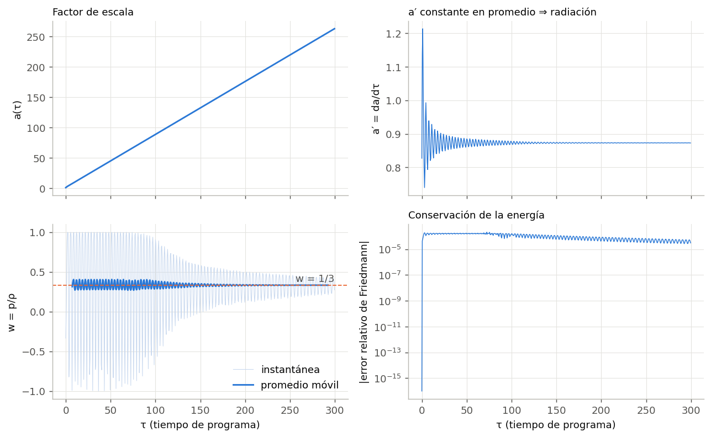
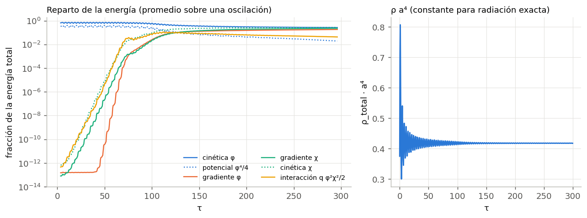
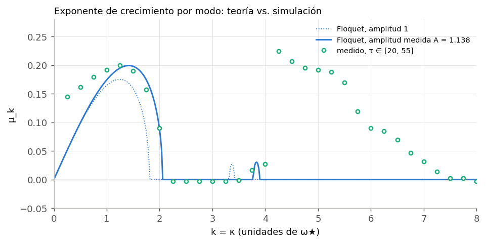
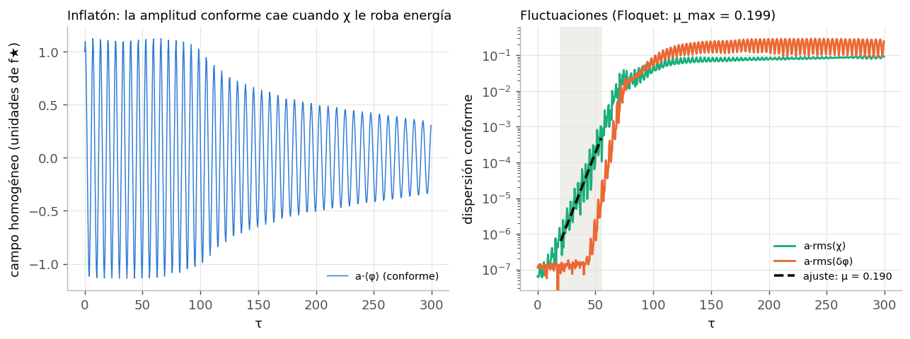
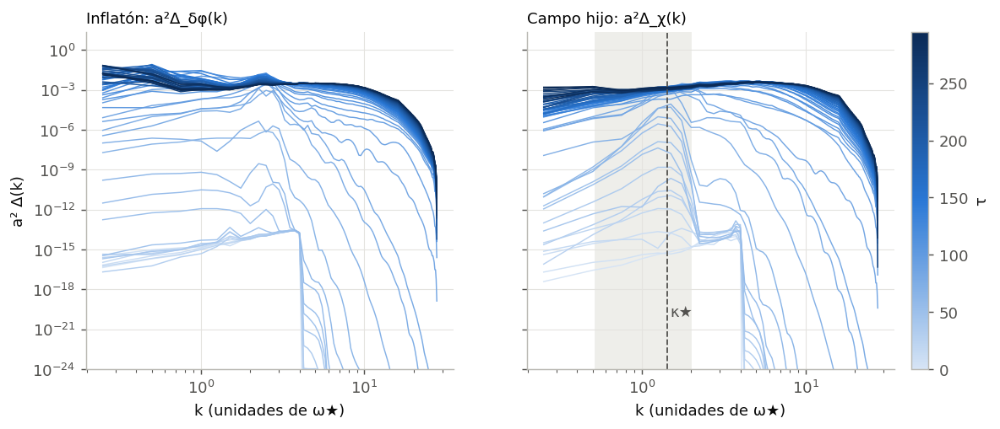
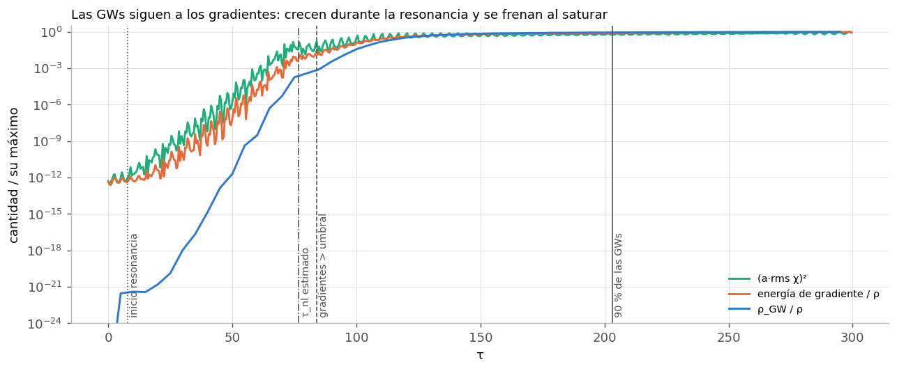
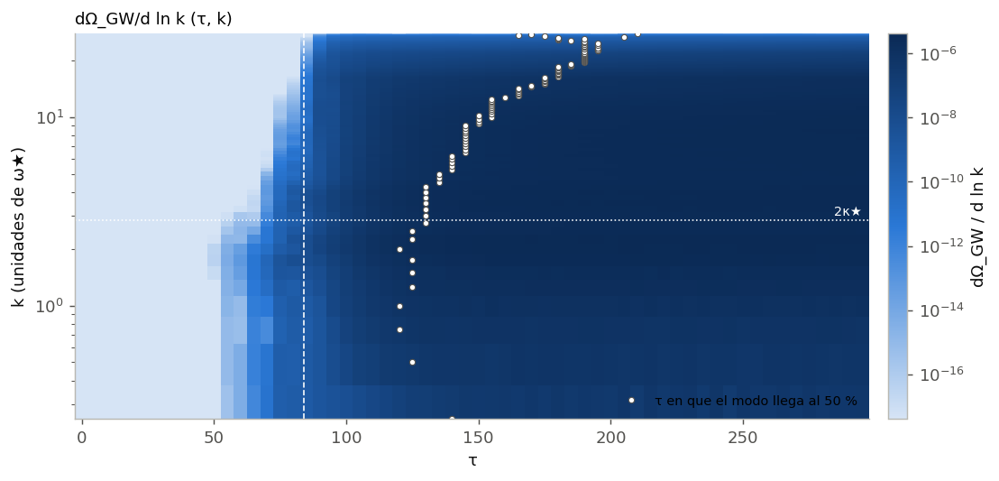
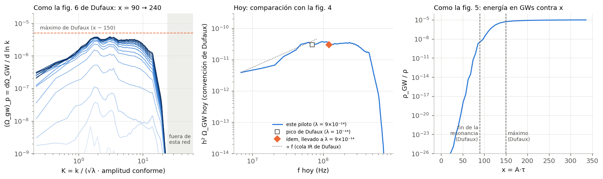

Primera simulación del proyecto: qué se corrió, qué salió, cómo se compara con
Dufaux et al. (2007) y qué implica para las corridas con campos de gauge.
¿No sos de física? La bitácora explica el
proyecto desde cero (sección 3.1 para esta corrida). Todos los números y figuras de esta página
salen del notebook code/analisis_corridas.py
y están registrados en provenance/.
1. Resumen y conclusiones
Antes de agregar campos de gauge hacía falta comprobar que sabemos simular el caso sin gauge
y que el resultado coincide con lo publicado. Esta corrida lo confirma. El campo que recibe
la energía crece donde y a la velocidad que dice la teoría. Las ondas gravitacionales se
producen cuando lo dice la teoría. Y el espectro final coincide con el de Dufaux y
colaboradores dentro de lo que se puede pedir. También aparecieron dos cosas que hay que
tener en cuenta en las corridas siguientes: la amplitud real del inflatón y la resolución
de la red.
El control está validado.
Pico de h²Ω_GW hoy: 3,8×10⁻¹¹ a 9,7×10⁷ Hz. Dufaux da ∼3×10⁻¹¹ a ∼1,2×10⁸ Hz, ya llevado a
nuestro λ.
Cola infrarroja: ∝ f0,96, contra ∝ f en Dufaux.
Etapas en el tiempo: la resonancia termina en x ≈ 95 (Dufaux: 90) y el espectro alcanza
su nivel alto en x ≈ 150 (igual que en Dufaux).
La teoría de Floquet funciona al 0,4 %, siempre que se use la amplitud
real del inflatón. Durante el primer instante, cuando la expansión todavía no se comporta
como radiación, el inflatón gana energía conforme: su amplitud conforme pasa de 1 a
A = 1,138. Con esa amplitud, Floquet da μ_max = 0,199 en k ≈ 1,42 y se mide 0,200.
Con amplitud 1 daría 0,175, un 14 % de diferencia que parecía un error y no lo es.
Las GWs siguen a los gradientes.
Durante la resonancia ρ_GW crece como e4μτ: se mide 0,76, contra 4μ = 0,80.
La producción deja de ser exponencial cuando la energía de gradiente llega al 1 % del total
(τ ≈ 84). La estimación a mano del fin de la resonancia da τ ≈ 77.
La mitad de las GWs finales ya está hecha en τ ≈ 130. El resto sale de la fase turbulenta,
sobre todo a escalas cada vez más chicas.
N = 128 no alcanza para el ultravioleta. La red llega hasta K ≈ 24 (en
unidades de la amplitud conforme). El espectro de Dufaux recién cae en K ≈ 50. La parte UV del
espectro (y el 22 % que el pico sigue creciendo al final) depende de la resolución. El pico,
la cola IR y los tiempos no dependen de ella.
2. Qué se corrió
El modelo lphi4 de CosmoLattice 2.0, V = λφ⁴/4 + g²φ²χ²/2, con los parámetros
acordados en Parámetros comparables, salvo el
tamaño de la red:
parámetro
valor
comentario
λ, q = g²/λ
9×10⁻¹⁴, 120
q = 120 es el caso de referencia de Dufaux et al.
φ inicial, φ̇ inicial
5,6964×10¹⁸ GeV, −4,86735×10³⁰ GeV²
fin de la inflación (ε = 1)
N, kIR
128, 0,25
la corrida final prevista es N = 256 con la misma kIR (misma caja)
kCutOff, dt, tMax
4, 0,01, 300
unidades de programa (ω★ = √λ f★)
GWs, semilla
sí (proyector 1), 1234
semilla fija: la corrida se puede repetir exacta
Duró 1 h 17 min usando los 8 núcleos de la máquina (el build usa OpenMP; 795 % de CPU) y usó
318 MB de memoria. Archivo de entrada:
code/lphi4_piloto_N128.in; salidas:
data/lphi4_piloto_N128/.
Unidades. Todo está en unidades de programa: los campos en unidades de f★ (el φ
inicial), el tiempo τ es el tiempo conforme por ω★ = √λ f★, y k es el número de onda comóvil en
unidades de ω★. Como en este modelo el código usa tiempo conforme (α = 1), la variable natural es
el campo conforme a·χ.
3. ¿Es confiable la simulación?

Factor de escala, su derivada, ecuación de estado w y error relativo del vínculo de
Friedmann.
Conservación de la energía: el error relativo del vínculo de Friedmann nunca
superó 2,1×10⁻⁴ y al final vale 3×10⁻⁵. Es el control estándar de que el integrador funciona.
Expansión de radiación: a crece linealmente en tiempo conforme y el promedio
de w tiende a 1/3, como tiene que pasar para un inflatón cuártico.
Un transitorio inicial: en los primeros τ ≈ 10, a′ oscila fuerte y ρa⁴ pasa
de 0,375 a 0,418 y ahí se queda. Es el efecto del término a″/a, que Dufaux et al. mencionan en su
nota 7: al principio el universo todavía no se expande como radiación. Este detalle resulta
importante en la sección siguiente.

Izquierda: fracción de la energía en cada término, promediada sobre una oscilación.
Derecha: ρa⁴, constante después del transitorio.
El reparto de la energía muestra las tres etapas del precalentamiento:
hasta τ ≈ 60, toda la energía está en el inflatón homogéneo;
entre τ ≈ 60 y 100 aparecen de golpe la interacción y los gradientes;
después se estabiliza, con ≈ 20 % en gradientes de cada campo.
4. La resonancia: teoría de Floquet contra simulación
Mientras χ es chico, cada modo del campo conforme X_k = a·χ_k obedece la ecuación de Lamé
(Greene et al. 1997; Dufaux et al. 2007, ec. 68):
donde A es la amplitud conforme del inflatón. Las soluciones crecen como eμ_k τ. El
exponente de Floquet μ_k se calcula numéricamente en el notebook. Si se cambia A, se reescalan a
la vez el tiempo y el momento: μ_A(κ) = A·μ₁(κ/A).
El hallazgo. Suponiendo A = 1 (el valor de partida), Floquet predice
μ_max = 0,175. En la simulación el modo más rápido crece con μ = 0,200, un 14 % más rápido. La
explicación es el transitorio de la sección 3. Después de él, la energía conforme del inflatón
es ρa⁴ = A⁴/4 = 0,418, o sea A = 1,138. Con esa amplitud:
Floquet, A = 1
Floquet, A = 1,138
simulación (τ entre 20 y 55)
μ máximo
0,175
0,199
0,200
dónde (k)
1,24
1,42
1,25–1,5 (bins de 0,25)
borde superior de la banda
≈ 1,8
≈ 2,05
entre 2,0 y 2,25

Exponente de crecimiento de cada modo de χ, medido como la pendiente de
½ ln(a²Δ_χ) entre τ = 20 y 55 (puntos), contra Floquet con amplitud 1 (punteado) y con la
amplitud medida (línea). La curva reescalada reproduce el pico, el borde de la banda y hasta la
segunda banda angosta en k ≈ 3,8.
Hay dos desvíos:
Modos con k ≲ 0,75 crecen más rápido que lo que predice Floquet. Son pocos
vectores de onda (la caja tiene pocos modos largos) y la causa no está identificada (ver
abierto).
Modos con k ≳ 4 crecen aunque están fuera de la banda. Arrancan casi de cero,
porque las fluctuaciones iniciales se cortan en kCutOff = 4, y crecen alimentados por los modos
resonantes: eso es re-dispersión no lineal.

Izquierda: el inflatón conforme a·⟨φ⟩ oscila con amplitud ≈ 1,14 hasta τ ≈ 80 y
después pierde amplitud porque le cede energía a χ. Derecha: dispersión conforme de χ y de δφ. δφ
arranca más tarde y crece más rápido, porque lo genera χ².

Espectros de potencia conformes a²Δ(k) de δφ y χ, de claro (temprano) a oscuro (tarde).
En χ, la franja gris es la banda de Floquet con la amplitud medida. El pico nace ahí y después el
espectro se ensancha hacia k grandes.
5. Las ondas gravitacionales: cuándo y dónde se producen
La fuente de las GWs es la parte transversa y sin traza de ∂_iφ∂_jφ + ∂_iχ∂_jχ: sin gradientes
no hay ondas. Por eso la pregunta "¿cuándo se producen las GWs?" equivale a "¿cuándo se vuelven
importantes los gradientes?".

(a·rms χ)², fracción de energía en gradientes y ρ_GW/ρ, cada una dividida por su
máximo. Las líneas verticales marcan los momentos de la tabla.
momento
τ
x = Aτ
definición
inicio de la resonancia
≈ 8
≈ 9
el modo del centro de la banda crece ×10
fin de la resonancia, estimado
≈ 77
≈ 87
(1/2μ) ln[1/(q⟨X²⟩_banda)], con el ruido inicial en la banda
gradientes > 1 % de la energía
84
95
medido
50 % de las GWs finales
130
148
medido
90 % de las GWs finales
203
231
medido
Fase lineal. Durante la resonancia ρ_GW/ρ crece con tasa 0,757, contra
4μ = 0,80. El factor 4 es el esperado: la fuente es cuadrática en χ, así que h ∝ e2μτ
y ρ_GW ∝ h′² ∝ e4μτ. Dufaux et al. lo formulan como ρ_gw ∝ n², con n el número de
partículas.
Fin de la resonancia. La estimación a mano (τ ≈ 77) y el momento en que los
gradientes llegan al 1 % (τ ≈ 84) coinciden a menos de 10 %. Eso da una regla práctica para
anticipar cuándo empieza la producción importante de GWs en los otros modelos: depende del
ruido inicial en la banda, de q y de μ.
Después de la resonancia. La mayor parte de las GWs no se hace
durante la resonancia exponencial, sino en la fase no lineal que sigue: la mitad recién está en
τ ≈ 130. Lo mismo dicen Dufaux et al., que la atribuyen a la fragmentación de las burbujas de
campo.

dΩ_GW/d ln k en el plano (τ, k). Los puntos marcan cuándo cada escala alcanzó la mitad
de su valor final: las escalas cercanas al pico se llenan en τ ≈ 120–130 y las más chicas bastante
después (cascada hacia el UV). Línea punteada vertical: gradientes > 1 %.
Propagación y horizonte. El horizonte comóvil k_H = a′/a vale 0,83 en τ = 0 y
cae por debajo del modo más largo de la caja (kIR = 0,25) antes de τ ≈ 3. Toda la producción
ocurre en modos que están muy adentro del horizonte, es decir, en ondas que se propagan
libremente.
6. Comparación con Dufaux et al. (2007)
Dufaux, Bergman, Felder, Kofman y Uzan (arXiv:0707.0875, §VI.B)
simularon este mismo modelo con q = 120, pero con λ = 10⁻¹⁴, en una red de 256³ y hasta x = 240.
Para comparar hay que traducir tres cosas:
Tiempo y momento. Ellos usan x = √λ φ₀ τ y K = k/(√λ φ₀). Lo que fija la
dinámica es la amplitud conforme después del transitorio: la de ellos es 1,151/4 φ₀
≈ 1,036 φ₀ (su a⁴ρ ≃ 1,15 λφ₀⁴/4) y la nuestra 1,138 f★. Se compara en x = Aτ y K = k/A; el
3,6 % de ellos se ignora.
Frecuencia. A igual K, f ∝ λ1/4 (su ec. 72), así que su pico se
corre de 7×10⁷ Hz a 7×10⁷ × 91/4 ≈ 1,2×10⁸ Hz.
Amplitud. (Ω_gw)_p ∼ α(aH/k★)² ∝ 1/(a_p² K★²) (su ec. 73) no depende de λ
directamente: solo importa cuándo se alcanza el pico. Con λ nueve veces mayor, el ruido inicial es
tres veces mayor y la resonancia termina unas 6 unidades de x antes. El efecto sobre la amplitud es
del orden del 10 %. Para pasar a hoy se usa su convención (ec. 47, h²Ω = 9,3×10⁻⁶ (Ω_gw)_p).

Izquierda: el espectro acumulado de x = 90 a 240 cada 10, como la fig. 6 de Dufaux
(línea naranja: su máximo; zona gris: momentos que esta red no tiene). Centro: el espectro hoy con
su convención; el cuadrado es su pico y el rombo el mismo pico llevado a nuestro λ. Derecha: ρ_GW/ρ
contra x, como su fig. 5.
qué
este piloto
Dufaux et al.
veredicto
pico hoy
3,8×10⁻¹¹ en 9,7×10⁷ Hz
∼3×10⁻¹¹ en ∼7×10⁷ Hz (→ 1,2×10⁸ Hz con λ = 9×10⁻¹⁴)
coincide: 25 % en amplitud, 20 % en frecuencia, con un espectro muy plano cerca del pico
cola IR al final
∝ f0,96
∝ f
coincide
fin de la resonancia
x ≈ 95 (gradientes 1 %)
x ≃ 90
coincide; lo esperado es que el nuestro termine ~6 antes por el λ mayor, dentro de la imprecisión de ambas definiciones
(Ω_gw)_p en el pico, x ≈ 90
6,8×10⁻⁹
∼10⁻⁹
compatible: en ese momento crece ×2 por unidad de x, y el nuestro va unas unidades de x adelantado
(Ω_gw)_p en el pico, x ≈ 150
2,8×10⁻⁶
∼5×10⁻⁶
mismo orden (factor 1,8)
(Ω_gw)_p en el pico, al final
4,1×10⁻⁶ (x = 336)
el pico no cambia después de x ∼ 150
difiere: el nuestro crece 22 % entre x ≈ 170 y el final, y el pico se corre de K ≈ 2 a K ≈ 3
ρ_GW en x = 150
52 % del final
"aumenta levemente" después
el nuestro sigue creciendo más; ver la fila anterior
K máximo de la red
24
el espectro cae en K ≈ 50
a N = 128 falta resolución UV
Lectura. Todo lo que depende de la física de la resonancia coincide: la
amplitud y la frecuencia del pico, la cola IR, los tiempos y la tasa de crecimiento. Lo único que
no coincide es lo que pasa en el UV al final: el espectro sigue creciendo y el pico se corre. Nuestra
red corta en K ≈ 24, cuando el espectro de Dufaux recién cae en K ≈ 50. Con ese corte, la cascada
hacia el UV se acumula en los últimos modos de la red en lugar de seguir de largo. Es el
comportamiento típico de una red sin resolución suficiente, y se confirma o descarta con N = 256.
7. Qué implica para el resto del proyecto
El control sirve como referencia. El resultado reproduce la literatura, así
que cualquier diferencia que aparezca en lphi4U1 y lphi4SU2U1 se puede
atribuir al modelo y no a cómo corremos el código.
Medir A en cada modelo. El emparejamiento de los modelos gauge supone que el
inflatón arranca en el mismo estado. Si es así, el transitorio y A = 1,138 deberían salir
iguales en los tres. Hay que medirlo en cada corrida: si A difiere, las bandas se corren y los μ
cambian, y la comparación deja de ser justa. El notebook ya calcula A para cualquier corrida.
Las bandas de referencia son las reescaladas. Para el chequeo de SU(2)×U(1)
(en qué k crecen los campos gauge), hay que comparar con Floquet reescalado por A:
κ★ ≈ 1,42 y no 1,24. Si la hipótesis q_eff = q_A + q_B es correcta, los campos gauge deberían
crecer en k ≈ 1,42·√2 en las unidades de esos modelos. Esa traducción hay que rehacerla con A antes
de la corrida.
Resolución: N = 128 alcanza para el pico, no para el UV.
Para el pico, la cola IR y los tiempos, N = 128 con kIR = 0,25 alcanza.
Para el UV hace falta k_max ≳ 55, es decir N = 256 con la misma kIR. Eso es ≈ 2,5 GB para
lphi4 (8 veces los 318 MB de hoy) y más para los modelos gauge. Con los ≈ 3 GB de
esta máquina no entra.
Una alternativa barata: N = 128 con kIR = 0,5. Llega al UV pero pierde la mitad de la
cola IR, y la banda resonante (0,5–2) queda en el borde de la caja.
Duración. El 90 % de las GWs está hecho en τ ≈ 200, así que tMax = 300 (y su
traducción para los modelos gauge, tMax ≈ 212 en sus unidades) alcanza para el pico. Una corrida N = 256
tardaría del orden de 8 veces más (≈ 10 h para lphi4, con los mismos 8 núcleos, que ya
se usan todos). Acelerarla requiere más núcleos, por ejemplo con MPI en otra máquina.
Frecuencia hoy ≈ 10⁸ Hz. Como ya se sabía para este modelo, la señal está
muy por encima de las bandas de LIGO y LISA. Para el proyecto importa la comparación entre
modelos, no la detectabilidad.
8. Qué queda abierto
El UV al final de la corrida: ¿el crecimiento del 22 % del pico y su
corrimiento a K ≈ 3 son físicos o un artefacto de la red? Se contesta con N = 256, o comparando con
N = 64 para ver la tendencia.
Los modos más largos (k ≲ 0,75) crecen más rápido que lo que predice Floquet
durante la fase lineal. Puede ser un efecto de pocos modos, un acople no lineal temprano o un
resto del transitorio. No afecta los resultados principales, pero conviene entenderlo antes de
comparar la parte IR de los espectros entre modelos.
Una sola realización: con una sola semilla no hay estimación de la varianza
estadística. Repetir el piloto con dos o tres semillas (cada una tarda ≈ 1 h 20 min) da barras
de error para los números de la tabla de Dufaux.